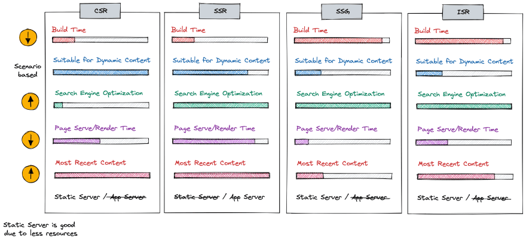

웹 애플리케이션을 개발하다 보면 다음과 같은 용어를 자주 보게 됩니다.
- CSR
- SSR
- SSG
- ISR
이들은 모두 웹 페이지를 어떻게 렌더링할 것인지에 대한 방식입니다.
특히 React나 Next.js 같은 프레임워크에서는 이 개념을 이해하는 것이 매우 중요합니다.
이 글에서는 각 렌더링 방식이 무엇인지 쉽게 정리해보겠습니다.

CSR, SSR, SSG, ISR 렌더링 방식 비교
1. CSR (Client Side Rendering)
CSR은 클라이언트에서 화면을 렌더링하는 방식입니다.
브라우저가 서버에서 HTML을 받아오는 것이 아니라 JavaScript를 통해 화면을 생성합니다.
React의 기본 방식이 바로 CSR입니다.
동작 과정
- 브라우저가 서버에 요청
- 서버는 거의 비어있는 HTML을 전달
- JavaScript 파일 다운로드
- React가 화면 렌더링
<div id="root"></div>
처음에는 HTML이 비어있고 JavaScript가 실행된 후 화면이 만들어집니다.
장점
- 페이지 이동이 빠름
- 인터랙티브한 UI 구현이 쉬움
- SPA 구조에 적합
단점
- 초기 로딩 속도가 느릴 수 있음
- SEO에 불리함
2. SSR (Server Side Rendering)
SSR은 서버에서 HTML을 생성해서 보내주는 방식입니다.
브라우저는 이미 완성된 HTML을 받기 때문에 초기 화면이 빠르게 나타납니다.
동작 과정
- 브라우저 요청
- 서버가 HTML 생성
- 완성된 HTML 반환
- 브라우저 렌더링
장점
- 초기 로딩 속도가 빠름
- SEO에 유리함
단점
- 서버 부하 증가
- 페이지 이동 시 서버 요청 발생
Next.js의 getServerSideProps가 대표적인 SSR 방식입니다.
3. SSG (Static Site Generation)
SSG는 빌드 시점에 HTML을 미리 생성하는 방식입니다.
즉, 사용자가 페이지를 요청하기 전에 이미 HTML 파일이 만들어져 있습니다.
동작 과정
- 빌드 시 HTML 생성
- CDN에 저장
- 사용자 요청 시 즉시 제공
장점
- 매우 빠른 페이지 로딩
- 서버 부하 없음
- SEO에 유리
단점
- 데이터가 변경되면 다시 빌드 필요
Next.js의 getStaticProps가 SSG 방식입니다.
4. ISR (Incremental Static Regeneration)
ISR은 SSG의 단점을 보완하기 위해 등장했습니다.
정적 페이지를 일정 시간마다 다시 생성하는 방식입니다.
즉, 페이지를 다시 빌드하지 않아도 데이터를 업데이트할 수 있습니다.
export async function getStaticProps() {
return {
props: {},
revalidate: 60
}
}
위 설정은 60초마다 페이지를 재생성합니다.
장점
- SSG의 빠른 속도 유지
- 데이터 자동 업데이트
5. 렌더링 방식 비교
| 방식 | 렌더링 위치 | 속도 | SEO |
|---|---|---|---|
| CSR | 브라우저 | 초기 느림 | 불리 |
| SSR | 서버 | 빠름 | 유리 |
| SSG | 빌드 시 생성 | 매우 빠름 | 유리 |
| ISR | 정적 + 재생성 | 빠름 | 유리 |
정리
각 렌더링 방식은 서로 다른 특징을 가지고 있습니다.
- CSR → 인터랙티브 앱
- SSR → SEO 중요 서비스
- SSG → 정적 페이지
- ISR → 정적 + 업데이트
최근 프레임워크들은 하나의 방식만 사용하는 것이 아니라 페이지마다 다른 렌더링 방식을 선택할 수 있도록 지원하고 있습니다.
따라서 서비스의 목적에 맞게 렌더링 전략을 선택하는 것이 중요합니다.